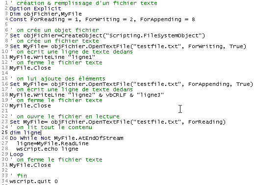

6. 文本文件
文本文件是一种包含多行文本的文件。让我们通过示例来了解此类文件的创建和使用。
6.1. 创建与使用
程序 |
 |
结果 |
评论
- 第 7 行使用 CreateObject("Scripting.FileSystemObject") 函数创建了一个类型为 "Scripting.FileSystemObject" 的文件对象。此类对象允许访问系统上的任何文件，而不仅仅是文本文件。
- 第 9 行创建了一个“TextStream”对象。该对象的创建与 testfile.txt 文件的创建相关联。该文件并非通过 c:\dir1\dir2\....\testfile.txt 这样的绝对路径指定，而是通过相对路径 testfile.txt 指定。因此，该文件将创建在执行该文件的命令所在的目录中。
- Windows 文件系统并不区分文本文件或非文本文件的概念，它仅识别文件本身。因此，是否将该文件视为文本文件，完全取决于使用该文件的程序。
- 第 9 行创建了一个对象，因此使用了 SET 命令进行赋值。创建文本文件对象涉及创建两个对象：
- 创建一个 Scripting.FileSystemObject（第 7 行）
- 随后使用 Scripting.FileSystemObject 的 OpenTextFile 方法创建一个“TextStream”对象（文本文件），该方法接受以下参数：
- 待处理文件的名称（必填）
- 文件访问模式。这是一个整数，有三种可能的值：
- 1：只读模式
- 2：写入模式。如果文件尚不存在，且第三个参数存在且值为 true，则创建该文件；否则不创建。如果文件已存在，则覆盖原文件。
- 8：追加模式，即写入文件末尾。如果文件尚不存在，且第三个参数存在并设置为 true，则创建该文件；否则不创建。
- 第 11 行使用创建的 TextStream 对象的 WriteLine 方法写入一行文本。
- 第 13 行“关闭”了文件。此后将无法再向该文件写入或从中读取数据。
- 第 16 行创建了一个新的“TextStream”对象，使用与之前相同的文件，但这次采用“追加”模式。将要写入的行将追加到现有行之后。
- 第 18 行写入两行新内容，请注意 vbCRLF 常量是文本文件的行尾标记。
- 第 20 行再次关闭文件
- 第 23 行以“读取”模式重新打开该文件：我们将读取文件内容。
- 第 27 行使用 TextStream 对象的 ReadLine 方法读取一行文本。文件首次“打开”时，光标位于文本的第一行。一旦该行被 ReadLine 方法读取，光标便会移至第二行。因此，ReadLine 方法不仅读取当前行，还会自动“移动”到下一行。
- 要读取所有文本行，必须在循环中反复调用 ReadLine 方法。当 TextStream 对象的 AtEndOfStream 属性被设置为 true 时，该循环（第 26 行）即告结束。这意味着文件中已无更多行可读。
6.2. 错误情况
有两种常见的错误情况：
- 尝试以读取方式打开不存在的文件
- 在调用 OpenTextFile 方法时，将第三个参数设置为 false，却尝试打开一个不存在的文件进行写入或追加操作。
以下程序演示了如何检测这些错误：
程序
' creating & filling a text file
Option Explicit
Dim objFichier,MyFile
Const ForReading = 1, ForWriting = 2, ForAppending = 8
Dim codeErreur
' create a file object
Set objFichier=CreateObject("Scripting.FileSystemObject")
' open a text file that should exist in read-only mode
On Error Resume Next
Set MyFile= objFichier.OpenTextFile("abcd", ForReading)
codeErreur=err.number
On Error GoTo 0
If codeErreur<>0 Then
' file does not exist
wscript.echo "Le fichier [abcd] n'existe pas"
Else
' close the text file
MyFile.Close
End If
' open a text file that must be writable
On Error Resume Next
Set MyFile= objFichier.OpenTextFile("abcd", ForWriting, False)
codeErreur=err.number
On Error GoTo 0
If codeErreur<>0 Then
wscript.echo "Le fichier [abcd] n'existe pas"
Else
' close the text file
MyFile.Close
End If
' open a text file that should exist as an addition
On Error Resume Next
Set MyFile= objFichier.OpenTextFile("abcd", ForAppending, False)
codeErreur=err.number
On Error GoTo 0
If codeErreur<>0 Then
wscript.echo "Le fichier [abcd] n'existe pas"
Else
' close the text file
MyFile.Close
End If
' end
wscript.quit 0
结果
6.3. 使用文本文件的 IMPOTS 应用程序
我们回到税款计算应用程序，假设计算税款所需的数据位于名为 data.txt 的文本文件中：
12620 13190 15640 24740 31810 39970 48360 55790 92970 127860 151250 172040 195000 0
0 0,05 0,1 0,15 0,2 0,25 0,3 0,35 0,4 0,45 0,5 0,55 0,6 0,65
0 631 1290,5 2072,5 3309,5 4900 6898,5 9316,5 12106 16754,5 23147,5 30710 39312 49062
这三行分别包含应用程序中 limit、coeffR 和 coeffN 数组的数据。得益于应用程序的模块化设计，主要修改集中在负责构建这三个数组的 getData 过程。新程序如下：
程序
' calculating a taxpayer's tax liability
' the program must be called with three parameters: married children salary
' married: character Y if married, N if unmarried
' children: number of children
' salary: annual salary without cents
' mandatory variable declaration
Option Explicit
Dim erreur
' retrieve arguments and check their validity
Dim marie, enfants, salaire
erreur=getArguments(marie,enfants,salaire)
' mistake?
If erreur(0)<>0 Then wscript.echo erreur(1) : wscript.quit erreur(0)
' retrieve the data needed to calculate taxes
Dim limites, coeffR, coeffN
erreur=getData(limites,coeffR,coeffN)
' mistake?
If erreur(0)<>0 Then wscript.echo erreur(1) : wscript.quit 5
' the result is displayed
wscript.echo "impôt=" & calculerImpot(marie,enfants,salaire,limites,coeffR,coeffN)
' leave without error
wscript.quit 0
' ------------ functions and procedures
' ----------- getArguments
Function getArguments(byref marie, ByRef enfants, ByRef salaire)
' must retrieve three values passed as arguments to the main program
' an argument is passed to the program without spaces in front and behind it
' use regular expressions to check data validity
' returns an error array variant with 2 values
' error(0): error code, 0 if no error
' error(1): error message if error otherwise empty string
Dim syntaxe
syntaxe= _
"Syntaxe : pg marié enfants salaire" & vbCRLF & _
"marié : caractère O si marié, N si non marié" & vbCRLF & _
"enfants : nombre d'enfants (entier >=0)" & vbCRLF & _
"salaire : salaire annuel sans les centimes (entier >=0)"
' we check that there are 3 arguments
Dim nbArguments
nbArguments=wscript.arguments.count
If nbArguments<>3 Then
' error msg
getArguments= array(1,syntaxe & vbCRLF & vbCRLF & "erreur : nombre d'arguments incorrect")
' end
Exit Function
End If
Dim modele, correspondances
Set modele=new regexp
' marital status must be among the characters oOnN
modele.pattern="^[oOnN]$"
Set correspondances=modele.execute(wscript.arguments(0))
If correspondances.count=0 Then
' error msg
getArguments=array(2,syntaxe & vbCRLF & vbCRLF & "erreur : argument marie incorrect")
' we leave
Exit Function
End If
' the value
If lcase(wscript.arguments(0)) = "o"Then
marie=true
Else
marie=false
End If
' children must be an integer >=0
modele.pattern="^\d{1,2}$"
Set correspondances=modele.execute(wscript.arguments(1))
If correspondances.count=0 Then
' error
getArguments= array(3,syntaxe & vbCRLF & vbCRLF & "erreur : argument enfants incorrect")
' we leave
Exit Function
End If
' the value
enfants=cint(wscript.arguments(1))
' salary must be an integer >=0
modele.pattern="^\d{1,9}$"
Set correspondances=modele.execute(wscript.arguments(2))
If correspondances.count=0 Then
' error
getArguments= array(4,syntaxe & vbCRLF & vbCRLF & "erreur : argument salaire incorrect")
' we leave
Exit Function
End If
' the value
salaire=clng(wscript.arguments(2))
' finished without error
getArguments=array(0,"")
End Function
' ----------- getData
Function getData(byref limites, ByRef coeffR, ByRef coeffN)
' the data of the three limit tables, coeffR, coeffN are in a text file
' called data.txt. Each array occupies a line in the form val1 val2 ... valn
' we find, in limit order, coeffR, coeffN
' renders a 2-element array error variant to handle possible errors
' error(0): 0 if no error, an integer >0 otherwise
' error(1): error message if error
Dim objFichier,MyFile,codeErreur
Const ForReading = 1, dataFileName="data.txt"
' create a file object
Set objFichier=CreateObject("Scripting.FileSystemObject")
' open the data.txt file in read mode
On Error Resume Next
Set MyFile= objFichier.OpenTextFile(dataFileName, ForReading)
' mistake?
codeErreur=err.number
On Error GoTo 0
If codeErreur<>0 Then
' there has been an error - it is noted
getData=array(1,"Impossible d'ouvrir le fichier des données [" & dataFileName & "] en lecture")
' we're back
Exit Function
End If
' we now assume that the content is correct and do no verification
' read the 3 lines
' limits
Dim ligne, i
ligne=MyFile.ReadLine
getDataFromLine ligne,limites
' coeffR
ligne=MyFile.ReadLine
getDataFromLine ligne,coeffR
' coeffN
ligne=MyFile.ReadLine
coeffN=split(ligne," ")
getDataFromLine ligne,coeffN
' close the file
MyFile.close
' finished without error
getData=array(0,"")
End Function
' ----------- getDataFromLine
Sub getDataFromLine(byref ligne, ByRef tableau)
' places the numerical values contained in line
' these are separated by one or more spaces
' initially the table is empty
tableau=array()
' we define a model for the
Dim modele, correspondances
Set modele= New RegExP
With modele
.pattern="\d+,\d+|\d+" ' 140.5 or 140
.global=true ' all values
End With
' we analyze the line
Set correspondances=modele.execute(ligne)
Dim i
For i=0 To correspondances.count-1
' resize the table
ReDim Preserve tableau(i)
' assign a value to the new element
tableau(i)=cdbl(correspondances(i).value)
Next
'end
End Sub
' ----------- calculerImpot
Function calculerImpot(byval marie,ByVal enfants,ByVal salaire, ByRef limites, ByRef coeffR, ByRef coeffN)
' the number of shares is calculated
Dim nbParts
If marie=true Then
nbParts=(enfants/2)+2
Else
nbParts=(enfants/2)+1
End If
If enfants>=3 Then nbParts=nbParts+0.5
' we calculate the family quotient and taxable income
Dim revenu, qf
revenu=0.72*salaire
qf=revenu/nbParts
' tax calculation
Dim i, impot
i=0
Do While i<ubound(limites) And qf>limites(i)
i=i+1
Loop
calculerImpot=int(revenu*coeffr(i)-nbParts*coeffn(i))
End Function
注释：
- 在文本文件 data.txt 中，值之间可能由一个或多个空格分隔，这使得无法使用 split 函数从行中提取值。因此必须使用正则表达式
- getData 函数除了返回三个限值数组 coeffR 和 coeffN 之外，还会返回一个结果，用于指示是否发生错误。该结果是一个包含两个元素的 Variant 数组。第一个元素是错误代码（无错误时为 0），第二个元素是发生错误时的错误消息。
- getData 函数不会对 data.txt 文件中找到的值进行验证。在实际应用中，它应该进行验证。